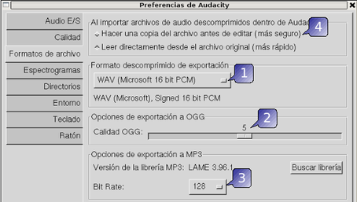

2.4.2. Configuración del Audacity
Temporalización: 30 minutos
Antes de comenzar a trabajar en un proyecto, se han de ajustar las preferencias respecto a los dispositivos de grabación y reproducción, los canales (mono, estéreo, etc.), la calidad del sonido y los formatos de exportación.
A estas opciones accedemos por el menú: Editar / Preferencias
Preferencias de Audio de E/S
Des de es ta ventana se configura el dispositivo de reproducció de sonido (1), el dispositivo de captura (2) y los canales de captura (3) -mono,estéreo, etc- y si se reproducen otras pistas mientras se graba (4 y 5) -por ejemplo para realizar una narración-
* En las grabaciones que hagamos a través del micro con utilizar el canal mono es suficiente ya que la grabación a través del micro no es en estéreo.
Aquí le indicamos al Audacity con qué calidad queremos realizar las grabaciones, teniendo en cuenta que a mayor calidad, mayor espacio en disco necesitaremos. Los parámetros a ajustar se encuentran en los apartador de frecuencia de muestreo y formato de muestreo. La tabla siguiente te puede servir como referencia para saber los valores a utilizar:
Frecuencia Canales
Formato
Voz (calidad baja) 11025
Mono
16
Voz (calidad alta)
44100
Mono
16 0 32
CD Audio
44100 Estéreo
32
Minidisc
48000
Estéreo
32
Radio FM
22050
Mono o Estéreo
8
(para mas información http://es.wikipedia.org/wiki/Audio_digital)
Preferencias de formatos de archivo

En este apartado se configuran las opciones de exportación a los formatos WAV (1) -opción por defecto en formato no comprimido-, OGG (2) y MP3 (3).
Si queremos conservar el archivo original -por si acaso- y trabajar con una copia hay que tener marcada la opción correspondiente (4)
Este artículo está licenciado bajo Creative Commons Attribution-NonCommercial 2.5 License
Formació del Professorat - CEFIRE